Project creation
There are different workflows depending on the device that you select:
Create new single-core/non-TrustZone project
The following steps explain how to create a new MDK project based on a single-core STM32 device.
- Open µVision.
- From the menu, select Project - New µVision project. Choose any name and location.
- Select your target device. If you have many device family packs installed, the search field helps you to find a device quickly:
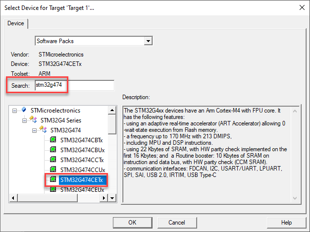
- The Manage Run-Time Environment window opens.
- [Required for TrustZone devices] Close it by clicking OK.
- [Required for TrustZone devices] Go to Project - Options for Target 'Target 1'... (Alt+F7). A new window opens.
- [Required for TrustZone devices] Set the Software Model to "TrustZone disabled":
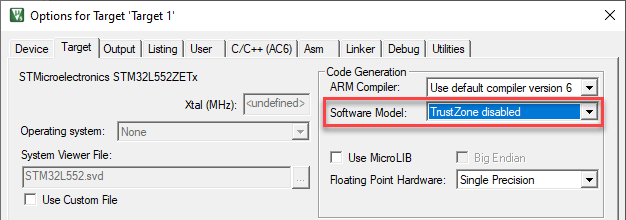
- [Required for TrustZone devices] Click OK to close the dialog.
- [Required for TrustZone devices] Go to Project - Manage - Run-Time Environment to open this window.
- [Optional] Switch the component bundle for the component class Device to 'STM32CubeMX' by selecting it from the drop down list in the 'Variant' column.
- Select Device:STM32Cube Framework:STM32CubeMX to trigger the integration of the Cube HAL into your project:
- Press Resolve to satisfy all missing dependencies. This ensures that all required components will be added to your project.
- Press OK to close the dialog.
- A dialog opens asking to launch STM32CubeMX. Click on “Start STM32CubeMX” and wait until the STM32CubeMX GUI is opened:
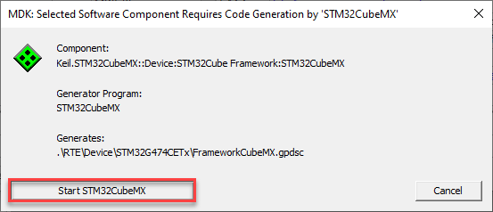
- [Required for TrustZone devices] After startup, an STM32CubeMX pop up window appears asking you about TrustZone. Select "without TrustZone enabled":
Continue with System and Pin Configuration.
Create new multi-core/TrustZone project
The following steps explain how to create a new MDK project for a dual-core or an Armv8-M-based STM32 device with TrustZone enabled.
- Create a folder for the multi-project workspace. Choose any folder name.
- Create sub-folders for the separate projects using names as shown in this table:
| Core | Project folder name |
| STM32H7/Cortex-M4 | CM4 |
| STM32H7/Cortex-M7 | CM7 |
| STM32L5/Secure | Secure |
| STM32L5/Non-Secure | NonSecure |
| STM32U5/Secure | Secure |
| STM32U5/Non-Secure | NonSecure |
| STM32WL/Cortex-M0+ | CM0PLUS |
| STM32WL/Cortex-M4 | CM4 |
- Open µVision to create a project for one of the cores or one of the security modes.
- From the menu, select Project - New µVision project. Choose any project name. Save the project in the appropriate sub-folder.
- Select your target device. If you have many device family packs installed, the search field helps you to find a device quickly:
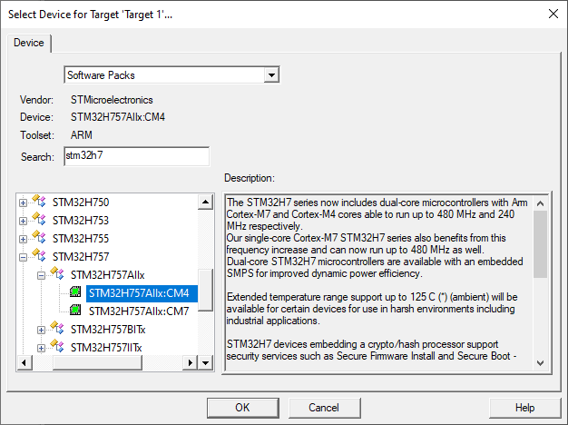
- The Manage Run-Time Environment window opens.
- [Required for TrustZone devices] Close it by clicking OK.
- [Required for TrustZone devices] Go to Project - Options for Target 'Target 1'... (Alt+F7). A new window opens.
- [Required for TrustZone devices] Set the Software Model to the appropriate model.
- [Required for TrustZone devices] Click OK to close the dialog.
- [Required for TrustZone devices] Go to Project - Manage - Run-Time Environment to open this window.
- [Optional] Switch the component bundle for the component class Device to 'STM32CubeMX' by selecting it from the drop down list in the 'Variant' column.
- Select Device:STM32Cube Framework:STM32CubeMX to trigger the integration of the Cube HAL into your project:
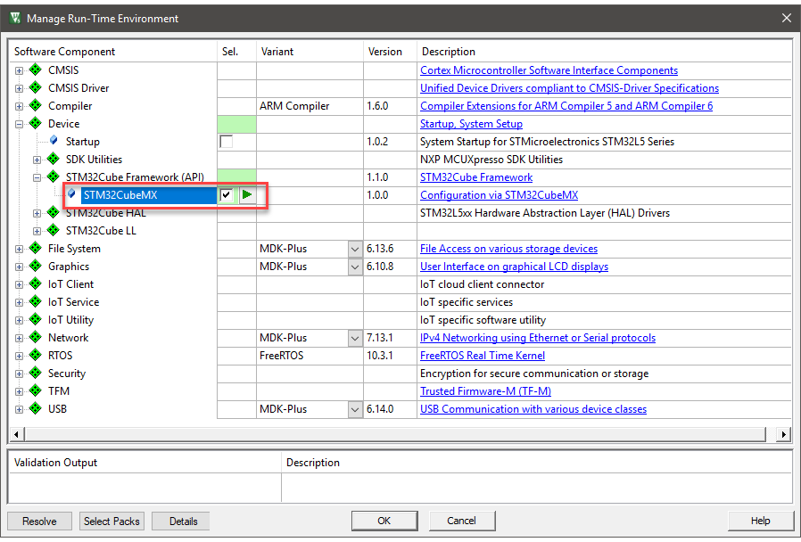
- Press Resolve to satisfy all missing dependencies. This ensures that all required components will be added to your project.
- Press OK to close the dialog.
- A dialog opens asking to launch STM32CubeMX. Click on “Start STM32CubeMX” and wait until the STM32CubeMX GUI is opened:
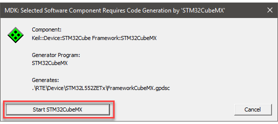
- [Required for TrustZone devices] After startup, an STM32CubeMX pop up window appears asking you about TrustZone. Select as required for the project.
- [Required for STM32WL devices] After startup, an STM32CubeMX pop up window appears asking you about the nature of the project. Select "as Dual core project":
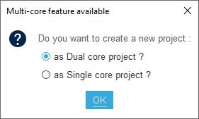
Continue with System and Pin Configuration.
System and Pin Configuration
- The STM32CubeMX window shows your selected device (1):
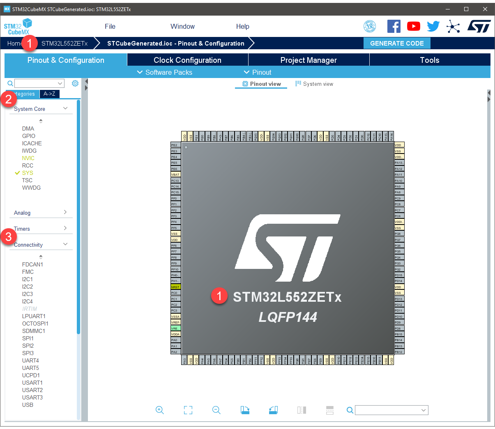
- Anytime, use Help [F1] to get access to the STM32CubeMX user manual.
- [Optional] For devices with Arm TrustZone (for example STM32L5), you need to select to use or dismiss TrustZone at the first start of the new project. This selection cannot be undone.
- Click on System Core (2) to see configuration options for:
- DMA
- GPIO
- ICACHE
- NVIC and others
- Configure these interfaces as required by your application or set our in example projects.
- Use the Pinout view to configure all necessary I/O pins to the required functions.
- Note
- The configuration for dual-core devices and devices with enabled TZ is done for both cores/zones. You can configure which core/zone will use an individual peripheral. If a peripheral is used by both cores/zones, you must configure which core initializes the peripheral:
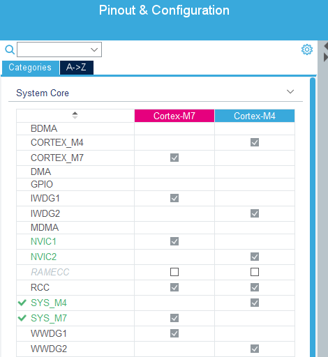
Connectivity Configuration
- Click on Connectivity (3) to see configuration options for the on-chip peripherals, such as:
- I2C
- LPUART
- UART
- SPI and others
- Configure these interfaces as required by your application or set our in example projects.
- For peripherals that are supported by CMSIS-Drivers, make sure to configure the correct number (refer to the CMSIS-Driver of your selected device that contains the information about the correlation between peripheral and driver number).
- Note
- The configuration for dual-core devices and devices with enabled TZ is done for both cores/zones. You can configure which core/zone will use an individual peripheral. If a peripheral is used by both cores/zones, you must configure which core initializes the peripheral:
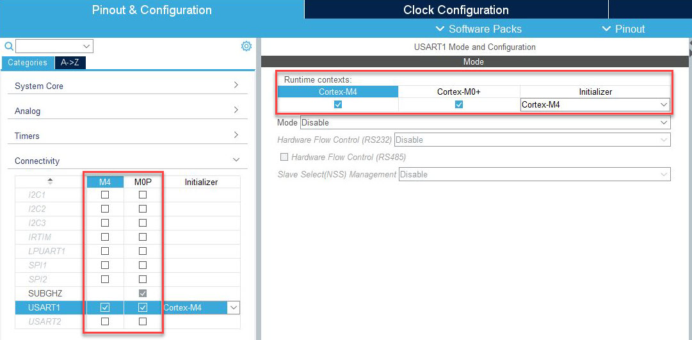
Clock Configuration
- On the Clock Configuration tab, adjust the clock to the desired settings:
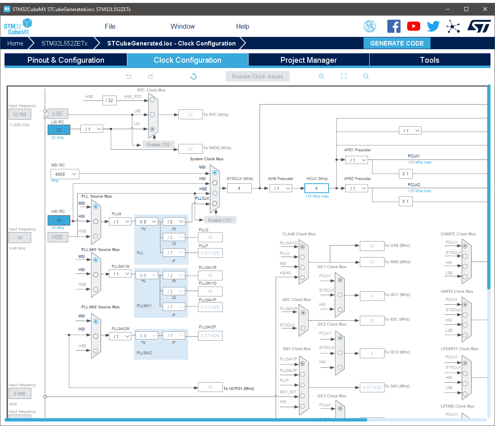
Generate Code
Before generating the code, set the appropriate options:
- Go to the Project Manager (1) tab.
- Click on Code Generator (2).
- Usually, select Add necessary library files as reference in the toolchain project configuration file.
- Do not enable Generate peripheral initialization as a pair of '.c/.h' files per peripheral as this is not supported:
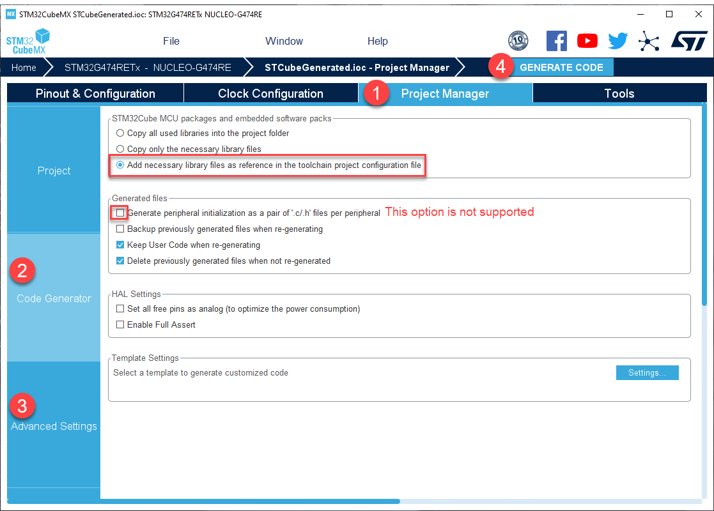
- [Optional] Click on Advanced Settings (3) to enable/disable the generation of function calls as required by your application/example project.
- Use the Generate Code (4) button to run the STM32CubeMX code generation.
- Close the dialog that confirms the end of the generation and switch back to µVision.
- Click OK to close the Manage Run-Time Environment window and confirm to import changes:
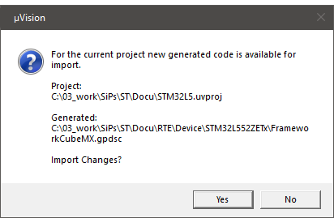
In case you need to change the configuration of your device, use the button in the Manage Run-Time Environment window to launch STM32CubeMX:
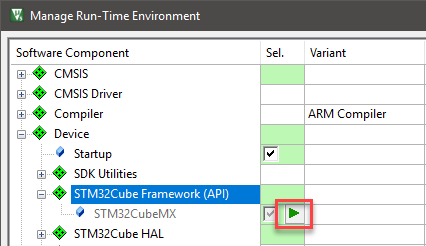
[Optional] Create additional multi-core/TrustZone project
The following steps explain how to create an additional MDK project for a dual-core or an Armv8-M-based STM32 device with TrustZone enabled. The first project was created in Create new multi-core/TrustZone project. Now, go to the other project folder and follow these steps:
- Open µVision to create a project for the other core or security mode.
- From the menu, select Project - New µVision project. Choose any project name. Save the project in the appropriate sub-folder.
- Select your target device. If you have many device family packs installed, the search field helps you to find a device quickly:
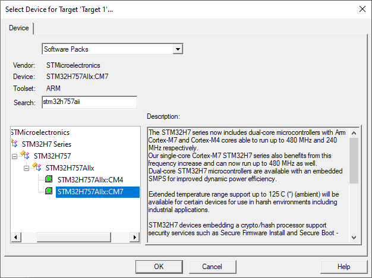
- The Manage Run-Time Environment window opens.
- [Optional for TrustZone devices] Close it by clicking OK.
- [Optional for TrustZone devices] Go to Project - Options for Target 'Target 1'... (Alt+F7). A new window opens.
- [Optional for TrustZone devices] Set the Software Model to the appropriate model.
- [Optional for TrustZone devices] Click OK to close the dialog.
- [Optional for TrustZone devices] Go to Project - Manage - Run-Time Environment to open this window.
- [Optional] Switch the component bundle for the component class Device to 'STM32CubeMX' by selecting it from the drop down list in the 'Variant' column.
- Select Device:STM32Cube Framework:STM32CubeMX to trigger the integration of the Cube HAL into your project:
- Press Resolve to satisfy all missing dependencies. This ensures that all required components will be added to your project.
- Press OK to close the dialog.
- As the STM32CubeMX device configuration was already done in step one, all CubeMX files will be automatically synchronized in uVision. Thus, no new instance of STM32CubeMX is opened.
- If required, the device can be re-configured in STM32CubeMX at any time. Open STM32CubeMX from any of the µVision projects (via the “play” button in the Manage Run-Time Environment window). The re-generated files will be automatically synchronized in both µVision projects.
µVision Project Overview
The C code generated by STM32CubeMX covers the initialization of the MCU peripherals using the STM32Cube firmware libraries. STM32CubeMX creates a source group in your project called STM32CubeMX:Common Sources. This group contains three files that contain user-dedicated sections allowing to insert user-defined C code:
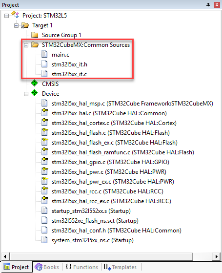
main.c is used to:
- Resetting the MCU to a known state by calling the HAL_init() function that resets all peripherals, initializes the Flash memory interface and the SysTick.
- Configuring and initializing the system clock.
- Configuring and initializing the GPIOs that are not used by peripherals.
- Defining and calling, for each configured peripheral, a peripheral initialization function that defines a handle structure that will be passed to the corresponding peripheral HAL init function which in turn will call the peripheral HAL MSP initialization function.
stm32l4xx_it.c contains the generated interrupt handlers. The column “Generate IRQ Handler” in STM32CubeMX NVIC settings allows controlling whether the interrupt handler function call shall be generated or not.
stm32l4xx_it.h is the associated header file.
[Optional] Add and Configure Keil RTX5
The following steps are a recommendation on how to integrate Keil RTX5 in a project that is configured with STM32CubeMX.
- In µVision, open the Manage Run-Time Environment window and select CMSIS:RTOS2 (API):Keil RTX5 from the list of available software components. Select the “Source” variant:
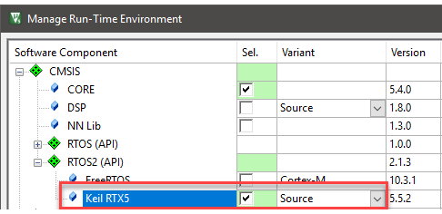
- Open STM32CubeMX, as described in Generate Code.
- In STM32CubeMX, open the (1) Pinout & Configuration tab, click on (2) System Core and then click on (3) NVIC. Switch to the (4) Code generation tab and under (5) Generate IRQ handler disable:
- System service call via SWI instruction
- Pendable request for system service
- Time base: System tick timer
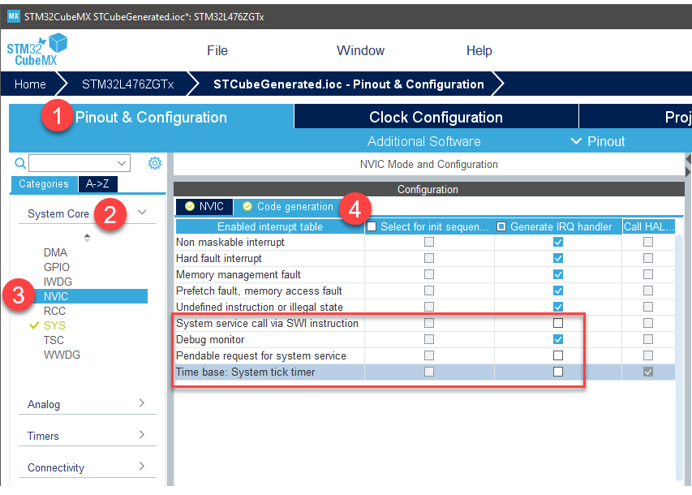
- Open
main.c in the μVision editor. Find the USER CODE includes and add the cmsis_os2.h header.
#include "RTE_Components.h"
#ifdef RTE_Compiler_EventRecorder
#include "EventRecorder.h"
#endif
#include "cmsis_os2.h"
extern void app_main (void* arg);
- Find the following code sequence near
main():
- Add the following code:
uint32_t HAL_GetTick (void) {
static uint32_t ticks = 0U;
uint32_t i;
if (osKernelGetState () == osKernelRunning) {
return ((uint32_t)osKernelGetTickCount ());
}
for (i = (SystemCoreClock >> 14U); i > 0U; i--) {
__NOP(); __NOP(); __NOP(); __NOP(); __NOP(); __NOP(); __NOP(); __NOP(); __NOP(); __NOP(); __NOP(); __NOP();
}
return ++ticks;
}
HAL_StatusTypeDef HAL_InitTick(uint32_t TickPriority) {
UNUSED(TickPriority);
return HAL_OK;
}
- Repeat for user code 2 sequence inside
main():
- Replace with:
#ifdef RTE_Compiler_EventRecorder
EventRecorderInitialize(EventRecordAll, 1);
#endif
SystemCoreClockUpdate();
osKernelInitialize();
osThreadNew(app_main, NULL, NULL);
osKernelStart();
- Create a new source file in your project called app_main.c and add the following content:
#include "cmsis_os2.h"
void app_main (void const* arg) {
while(1) {
...
}
}
STM32CubeMX generated code and HAL initialization is now isolated in the main.c module. Feel free to extend app_main.c with your user code instead.
Tips, Tricks and Pitfalls
When using µVision with STM32CubeMX, you should consider the following things:
- This document describes how to create projects for STM32 single-core Cortex-M devices. As explained above, always launch STM32CubeMX from the µVision window Manage Run-Time Environment with the 'Play' button under Device:STM32Cube Framework (API):STM32CubeMX. Only this ensures, that STM32CubeMX is launched with the right parameters for your project. Creating applications for STM32 dual-core Cortex-M devices works completely different. The 'Play' button is not available there. Please see Application Note 338 for more details.
- STM32CubeMX creates its project file at this location:
...\<project>\RTE\Device\<Dname>\STCubeGenerated\STCubeGenerated.ioc
- STM32CubeMX creates a µVision project file at this location:
...\<project>\RTE\Device\<Dname>\STCubeGenerated\MDK-ARM\STCubeGenerated.uvprojx
- Even if you have launched STM32CubeMX correctly from µVision, do NOT load any other STM32CubeMX project file (*.ioc) manually! This would override the path for the source files and µVision would fail to find the source files.
- If you get compilation errors in CMSIS driver source files or in STM32Cube HAL source files you should check if the Device Family Pack is compatible with the installed STM32Cube Firmware Package. The compatible STM32Cube Firmware version is mentioned in the release notes of the Device Family Pack.
- Open the Pack Installer and select the device you are using in the left window.
- When you hover the mouse over the pack name or the action button, you see the release notes of this pack. The compatible version of the STM32Cube firmware package is listed at the very top of this list. It is not guaranteed that newer versions of a STM32CubeMX firmware packages are always compatible with this Device Family Pack.
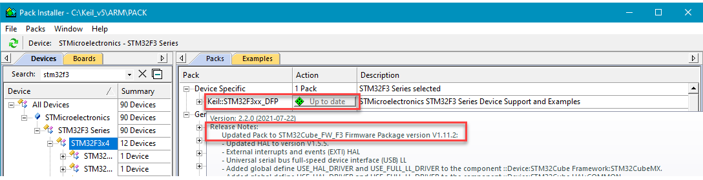
- Check the version of the installed STM32CubeMX firmware package in the STM32CubeMX dialog Help - Manage embedded software packages
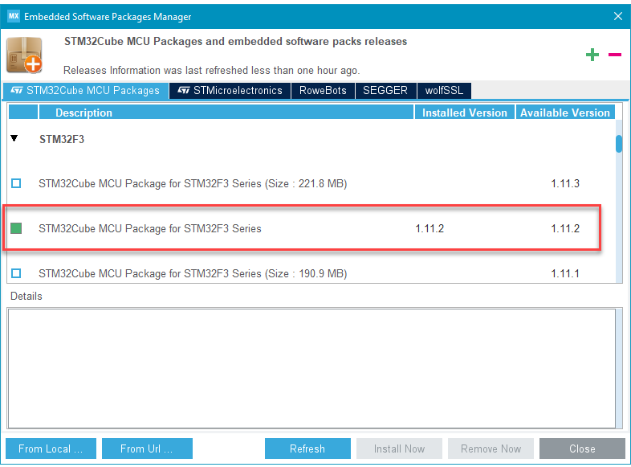
- Project Synchronization between µVision and STM32CubeMX:
- The µVision project and the STM32CubeMX project are synchronized via GPDSC file
...\<project>\RTE\Device\<Dname>\FrameworkCubeMX.gpdsc
- µVision creates the file
...\<project>\RTE\Device\project.script
When a project needs to be archived or when a project is shared in a team, we recommend to put all files of the whole project folder into a repository except:
- Listing files (*.lst) - these files are generated with every project build
- Object files (*.o) - these files are generated with every project build
- <project>.uvguix.<UserName> - this file only holds µVision GUI layout information for one user
The RTE folder contains the source files from packs as well as all STM32CubeMX generated files.